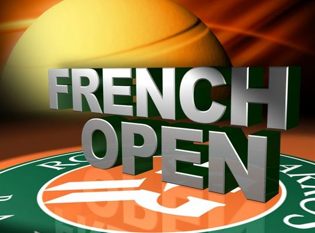
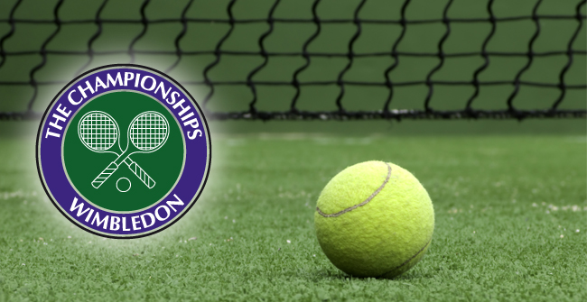

They are the the Wimbledon Championships, the French Open, the Australian Open and the US Open. These tournaments are the most significant in the world in relationship to tradition, world ranking, public attention and prize money.
The Australian Open takes place at Melbourne Park during the Australian summer in January, making it the first of the Grand Slam tournaments to be held each year. The Australian Open was first held in 1905, and it was held on grass courts until 1987. Beginning in 1988, the tournament has been contested on hard courts. Its current champions are Roger Federer (men's singles), Serena Williams (women's singles), Bob and Mike Bryan (men's doubles), Serena and Venus Williams (women's doubles), and Cara Black and Leander Paes (mixed doubles).
The next Grand Slam tournament to be held on the annual tennis calendar is the French Open. The tournament, takes place over the course of two weeks in the spring, from late May to early June. The French Open, held in Paris, is the only tournament of the Majors that is held on a clay court, as it has been since it began in 1891. Because clay is a slow-moving surface, the French Open is often regarded as the most physically difficult of the Grand Slam tournaments. Its current champions are Rafael Nadal (men's singles), Francesca Schiavone (women's singles), Daniel Nestor and Nenad Zimonjic (men's doubles), Serena and Venus Williams (women's doubles), and Katarina Srebotnik and Nenad Zimonjic (mixed doubles).
The third Grand Slam tournament is perhaps the most well-known tennis tournament in the world, and it also has the distinction of being the oldest. The Wimbledon Championships has been held since 1877 in the London suburb of Wimbledon, from late June to early July. Wimbledon places a strong emphasis on tradition: it is the only one of the Majors still held on grass, and spectators eat strawberries and cream, a traditional English dessert, while watching the games. Wimbledon's current champions are Rafael Nadal (men's singles), Serena Williams (women's singles), Jürgen Melzer and Philipp Petzschner (men's doubles), Vania King and Yaroslava Shvedova (women's doubles), and Leander Paes and Cara Black (mixed doubles).
The final Grand Slam tournament of the annual tennis calendar is the most recent addition to the Majors. The US Open began as the U.S. National Championship in 1881, but it did not join the Grand Slam tournaments until 1987. The US Open is held during the weeks before and after Labor Day weekend, from late August to early September. The tournament has changed its courts several times over the years, beginning with grass, then moving to clay in 1975, and finally to hard courts in 1978. The current champions are Juan Martin del Potro (men's singles), Kim Clijsters (women's singles), Lukáš Dlouhý and Leander Paes (men's doubles), Serena and Venus Williams (women's doubles), and Carly Gullickson and Travis Parrott (mixed doubles).